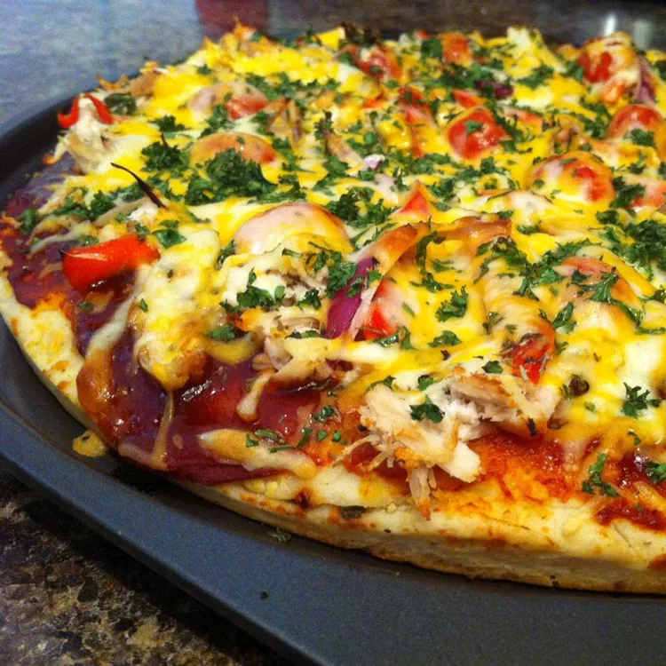

Why choose barbecue chicken or pizza when you can savor both on a single slice? Inspired by pizzerias like California Pizza Kitchen, this saucy pie is semi-homemade and much simpler than it looks to DIY. Plus it cooks right on an outdoor grill or grill pan, so clean-up is a cinch. "I LOVED this! I'm not sure why I've never tried pizza on the barbecue before, but I'm sure glad I did. It will for sure become popular on our summer menu. This is such a great way for people to customize their own pizzas," says Allrecipes fan Chef V.